BASKETBALLKEEP
Dynasty · Redraft · Hardwood
Fun tape · not news
The X
NBA memes and shitposts pulled from X. Pictures when the wire carries them.
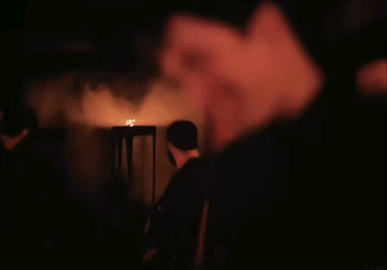
RedditSteph Curry when he’s asked about affordable housing
submitted by /u/Justviewingposts69 [link] [comments]
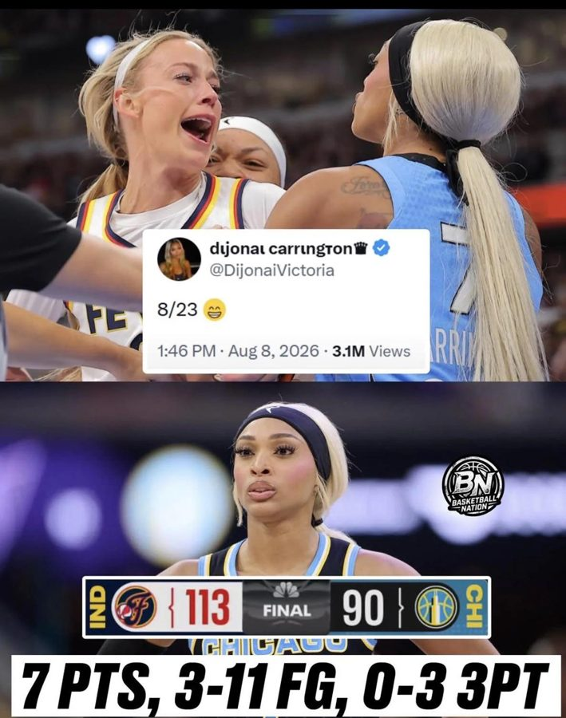
RedditWhite Privilege no more
submitted by /u/Pauliehatestheadmins [link] [comments]
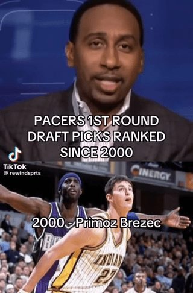
RedditPacers 1st round picks since 00
submitted by /u/GoonLieutenant [link] [comments]
RedditKobe didn't want things handed to him, Mamba Mentality
submitted by /u/doopdapdeedap [link] [comments]
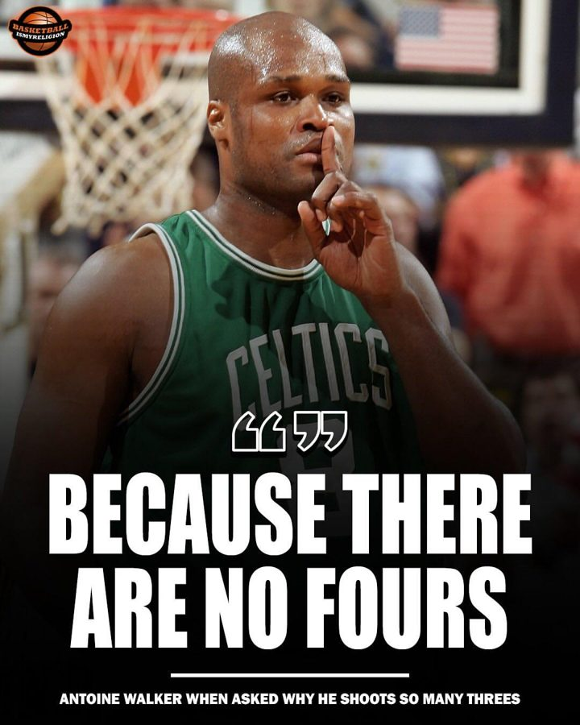
Redditway ahead of his time
submitted by /u/WhenMachinesCry [link] [comments]
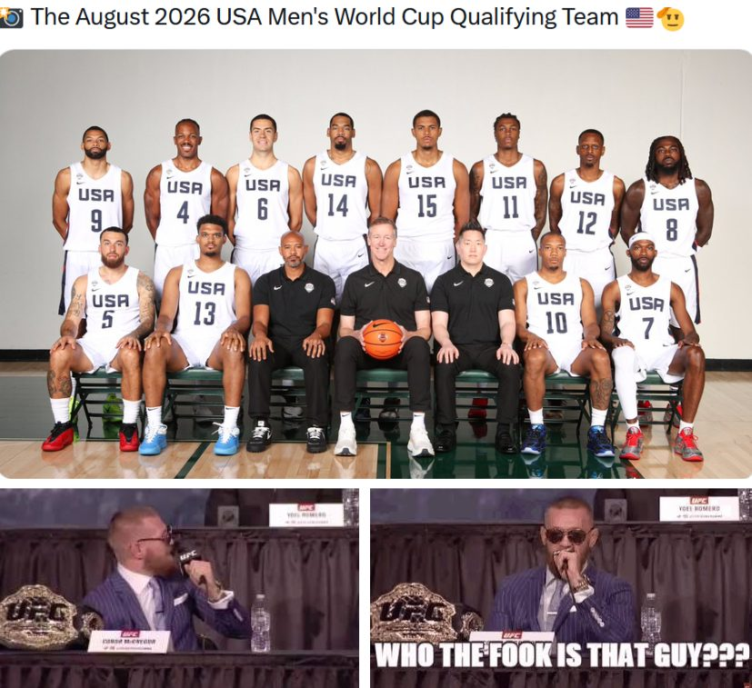
RedditTeam USA 2026
submitted by /u/WhenMachinesCry [link] [comments]
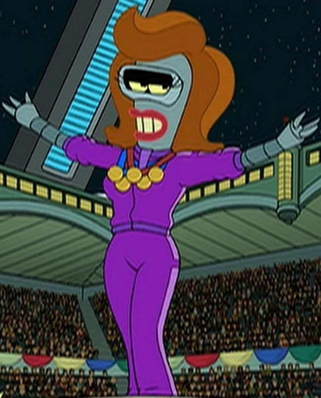
RedditShe did it the right way
submitted by /u/Mixing_It_Hot [link] [comments]
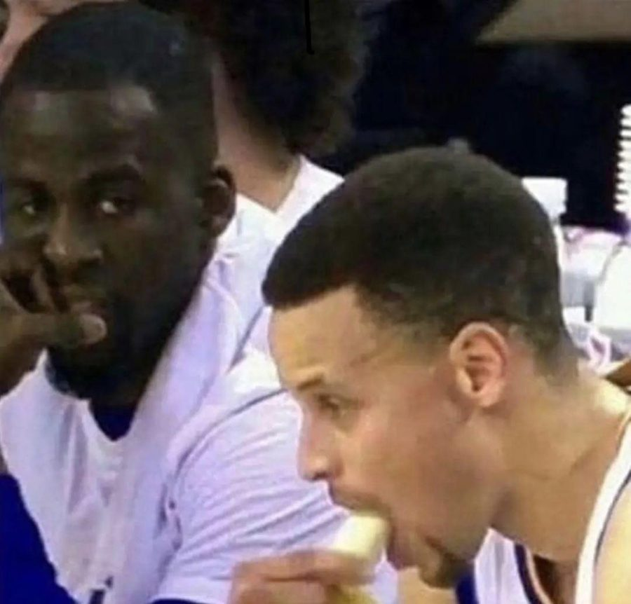
RedditDray is shook
But it looks like Steph could take another 3-4 inches . submitted by /u/Rocketparty12 [link] [comments]
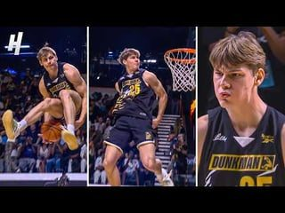
Reddit[Highlights] 2026 Dunkman Champion - Cam Hazzard
submitted by /u/PapiShot [link] [comments]
RedditI don't know why we need movies when we had an NBA with Dwight Howard in it
submitted by /u/EveryDayImBuff-ering [link] [comments]
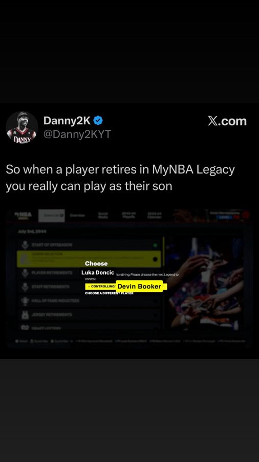
RedditI can’t believe how realistic 2k27 is
submitted by /u/thehawk329 [link] [comments]
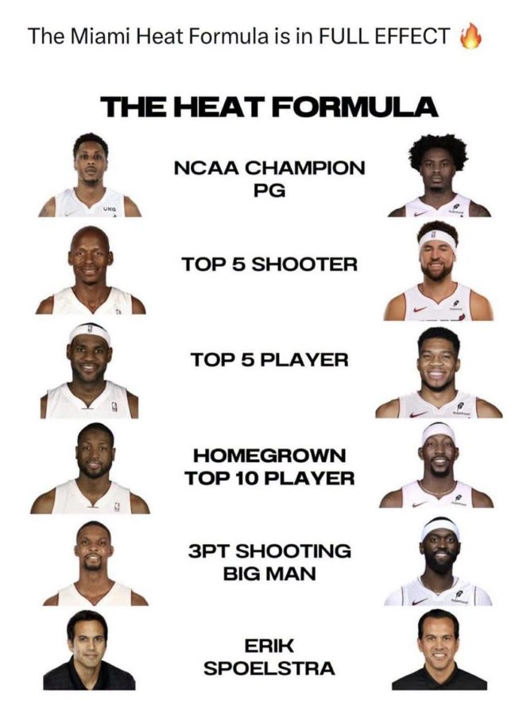
RedditMiami knows how to cook!!
submitted by /u/Embarrassed-Drop-987 [link] [comments]
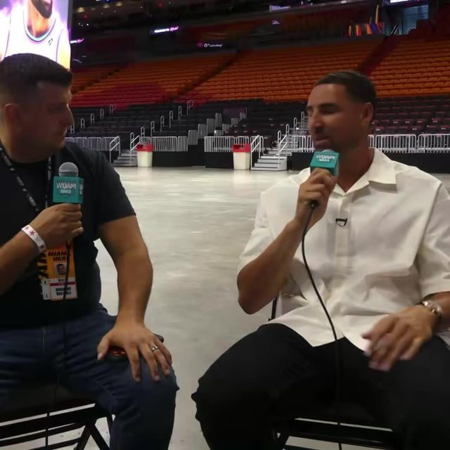
RedditKlay: "All the notoriety you get from playing this game at a high level doesn't hit the same as chasing a championship. I know Pat & Spo know all about that - so does Bam, Giannis,
submitted by /u/taygads [link] [comments]
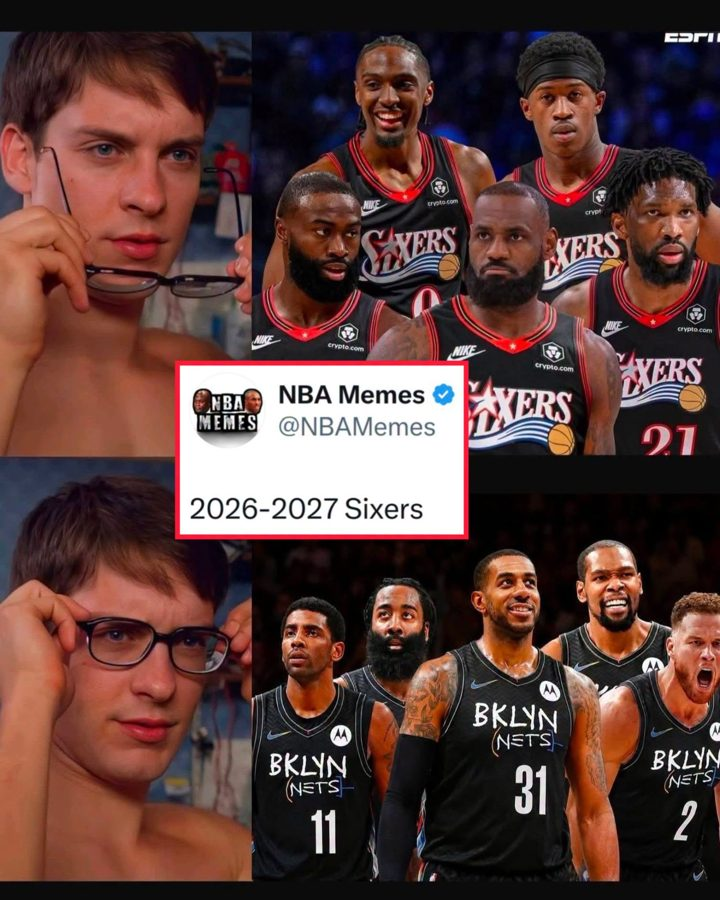
RedditChampionship or bust
submitted by /u/Thanos_Real_AuraVNCH [link] [comments]
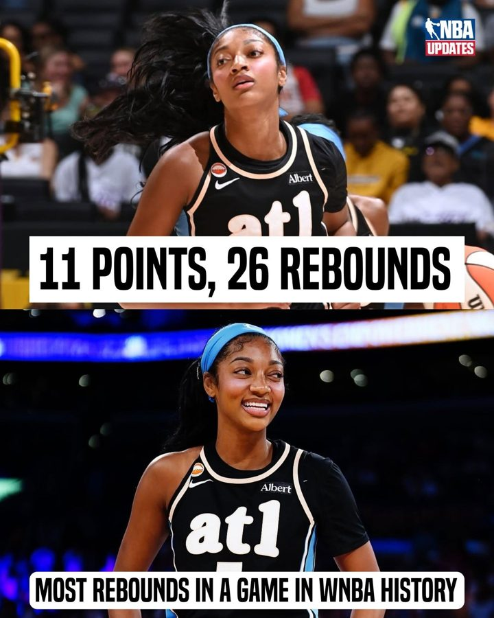
RedditIs Angel Reese the Dennis Rodman of WNBA?
submitted by /u/Thanos_Real_AuraVNCH [link] [comments]
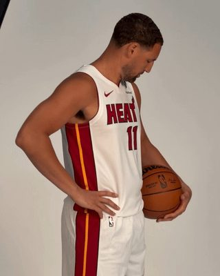
RedditHoly fuck
This might be the most washed looking player Ive ever seen submitted by /u/Tripple-O [link] [comments]
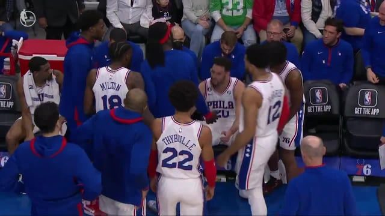
RedditTeammates Shake Milton and Georges Niang get into an argument after Milton refuses to pass on a fast-break
submitted by /u/LemonButterRum [link] [comments]
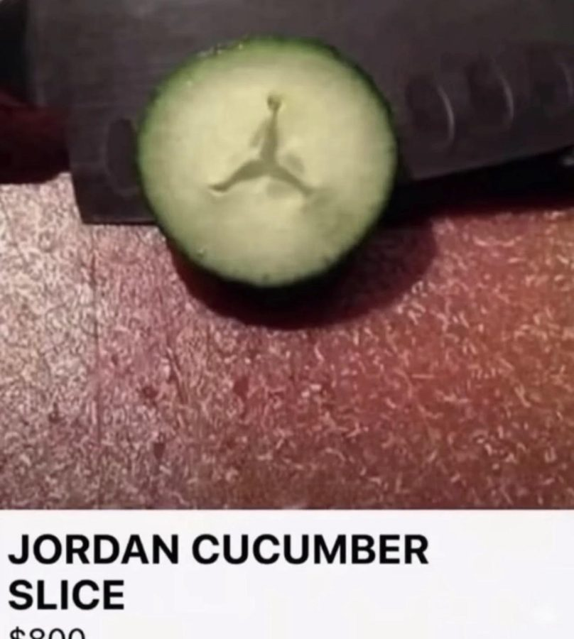
RedditHow much you bums paying?
submitted by /u/Woodworking33 [link] [comments]
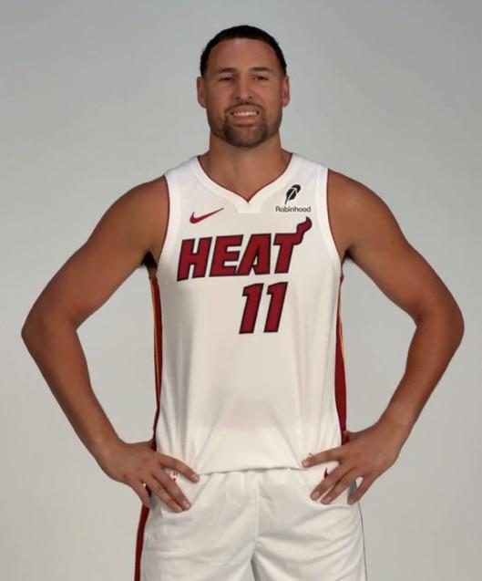
RedditCeltics Shaq, you can now rest
submitted by /u/Pops101101 [link] [comments]
Reddit"Dude have you seen this Enes Kanter Freedom stuff? This shit is amazing lolol. SHE is a strong woman and she's stunning and brave (south park reference)."
submitted by /u/BortlesLVRaiderWinSB [link] [comments]
RedditA Co-worker Made This
submitted by /u/Glizzy_Borden69 [link] [comments]
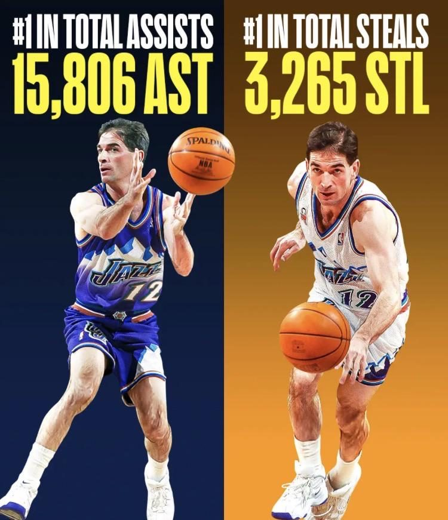
RedditIf LeBron James played in all 82 games for 5 more seasons while averaging 7 assists and 2 steals a game, he still wouldn’t catch John Stockton 🤯
submitted by /u/WallStreetDoesntBet1 [link] [comments]
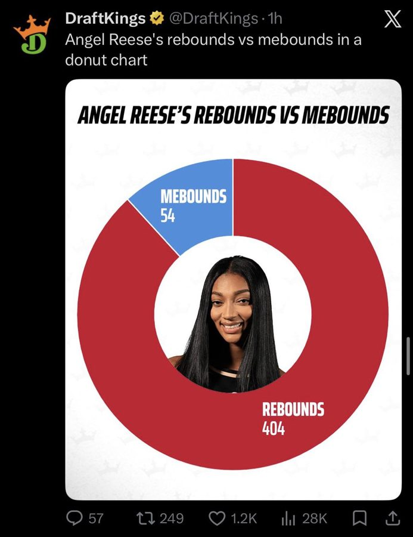
RedditShut the damn sub down
submitted by /u/Powerful-Ad-8737 [link] [comments]
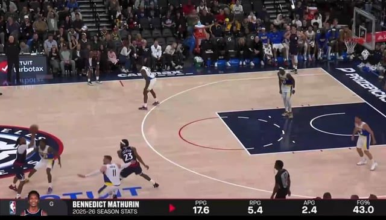
Reddit[Fischer] Bennedict Mathurin is expected to opt-in to his qualifying offer to remain in LA or be sign-and-traded to the Pelicans. New Orleans has been the one aggressive suitor for
submitted by /u/YujiDomainExpansion [link] [comments]
 Reddit
RedditBlazers 1st round picks since 00
submitted by /u/GoonLieutenant [link] [comments]
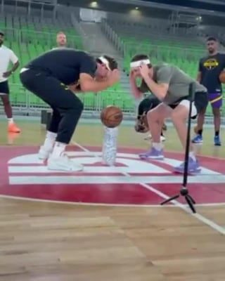
RedditLuka and Reaves Face off in a Reaction Time Test
submitted by /u/BcuzRacecar [link] [comments]
RedditDicks out for dolly boys. No jerk.
submitted by /u/PurpleWoodpecker2830 [link] [comments]
RedditFirst the stole our jobs, now they’ve stolen Mommy Brink
submitted by /u/PreservedInCarbonite [link] [comments]
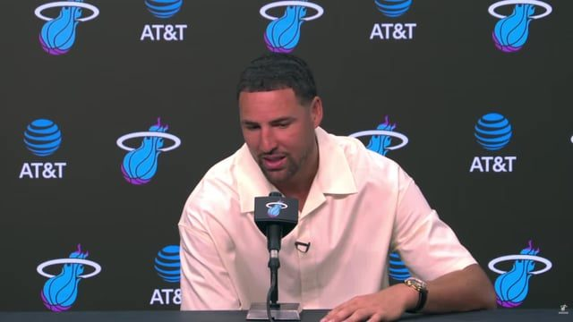
RedditKlay Thompson on Giannis Antetokounmpo and his impact: "His interior scoring is one of the best ever, and his jump shot is greatly improved. Now you can't sag off him like you used
This was the last question from the press conference. Klay also mentioned earlier that Giannis had yet to reach out to him, but Bam did. He
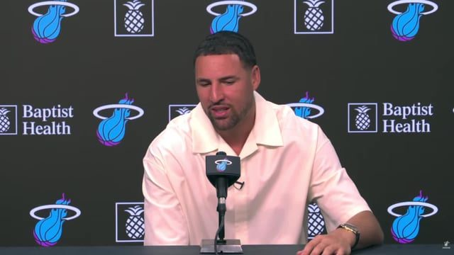
RedditKlay Thompson on where he is now physically in comparison to 3-4 years ago. "I can do it at a high level. The durability for me has been huge plus... it's nice to walk on the floor
"We're talking about a conditioning test last night, so I'm happy I got 5 weeks to really prepare for the Miami regimen" submitted by /u/MrB
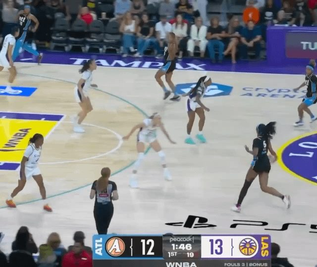
RedditMommy Brink locked up Sid and made her cry on the floor
submitted by /u/natebryan [link] [comments]
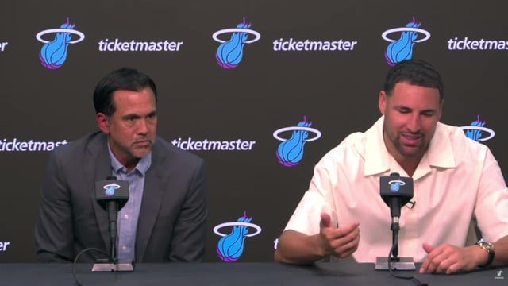
RedditKlay Thompson explains that the reasons he gave up a lot of money and joined the Miami Heat have to do with the opportunity to play high-level basketball and make a deep postseason
submitted by /u/MrBuckBuck [link] [comments]
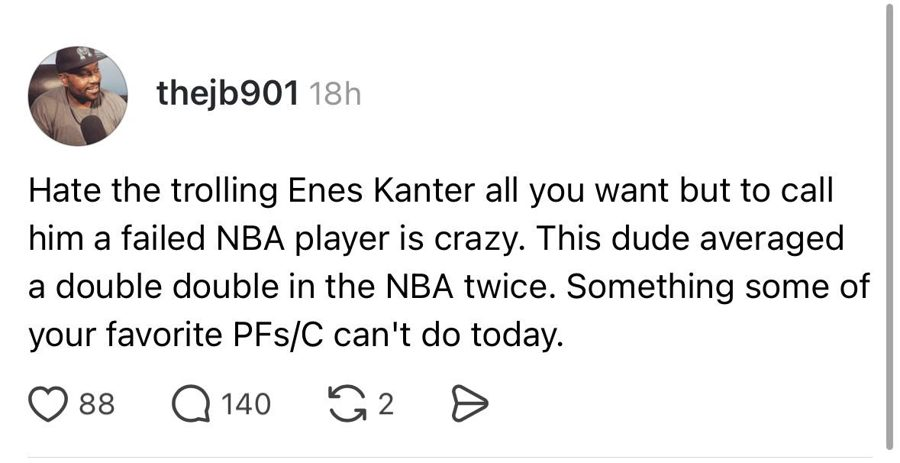
RedditGenerational Loser
submitted by /u/TheGreatWaru [link] [comments]
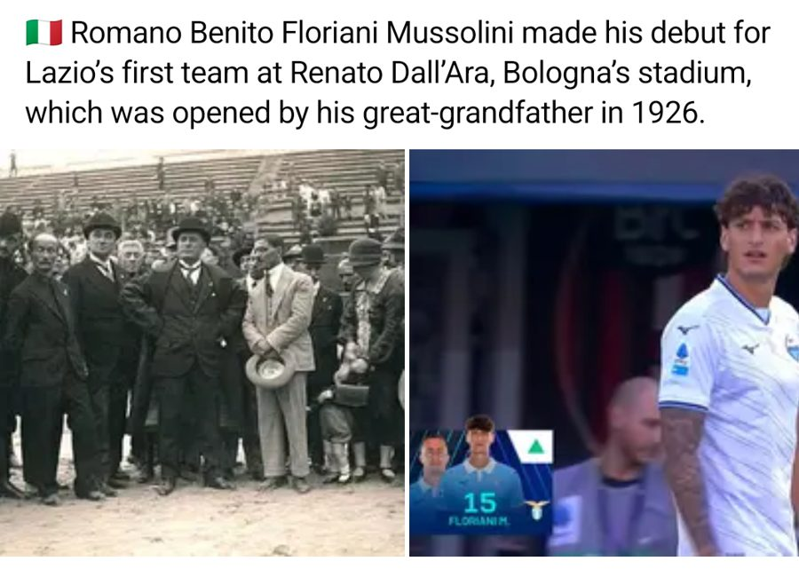
RedditIt's like Baron playing for Boston
submitted by /u/toyota_gorilla [link] [comments]
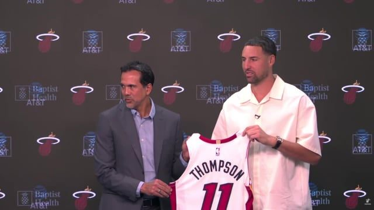
RedditErik Spoelstra and Klay Thompson take photos with Klay Thompson's new Miami Heat jersey.
submitted by /u/MrBuckBuck [link] [comments]
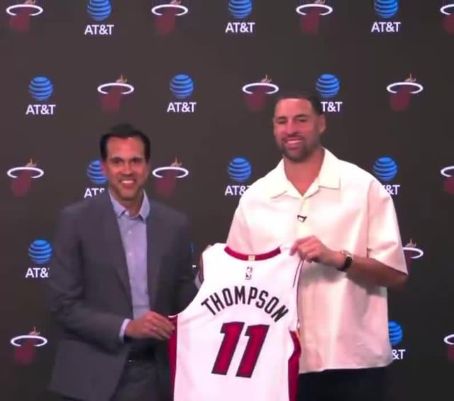
RedditKlay Thompson has officially arrived in Miami and now begins his tenure with the Heat.
submitted by /u/Subject-Property-343 [link] [comments]